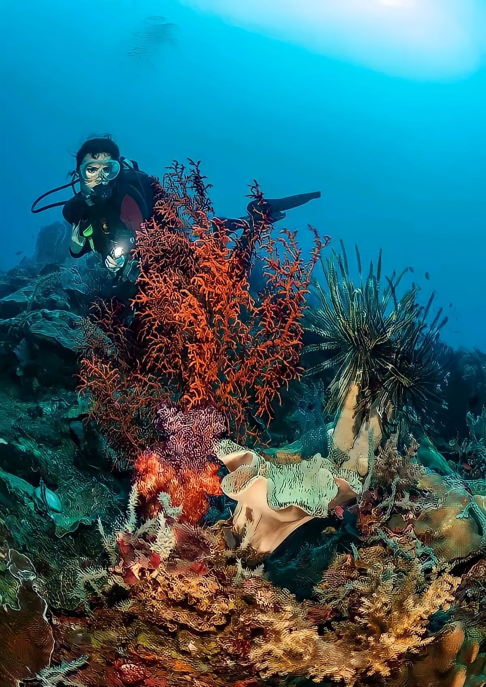
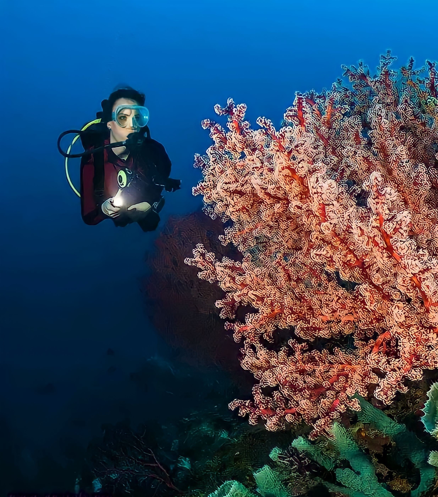

HISTORY OF PUNTA BULATA, CAUYAN, PHILIPPINES
Punta Bulata is intertwined with the rich cultural and natural heritage
of Negros Occidental, Philippines. Initially, Punta Bulata was a secluded coastal area
known only to locals for its pristine beaches and lush surroundings. Over time, as tourism
began to
flourish in the region, the area gained attention for its breathtaking beauty
and tranquil ambiance. In the late 20th century, efforts were made to develop Punta Bulata
into a premier beach resort destination, attracting visitors seeking an escape from the
urban grind. Through thoughtful development and preservation of its natural environment,
Punta Bulata has emerged as a haven for travelers looking to unwind amidst the splendor
of nature. Today, it stands as a testament to sustainable tourism practices, offerig guests
an
opportunity to experience the timeless charm and beauty of the Philippines' coastal
treasures.
With each passing year, it stands as a shining example of how tourism can serve as a force
for positive
change, enhancing both the natural environment and the well-being of local communities. In
the hearts of
travelers and residents alike,
Punta Bulata will forever hold a special place as a sanctuary where the timeless beauty of
the
Philippines'
coastal treasure meets the warmth of Filipino hospitality.
